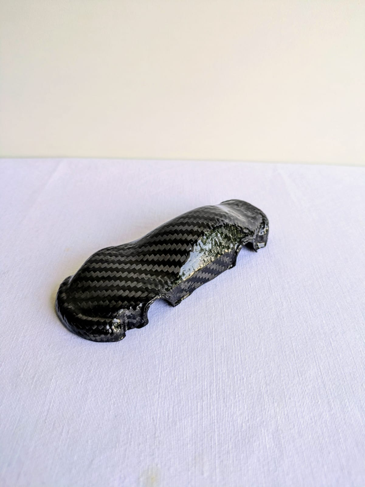
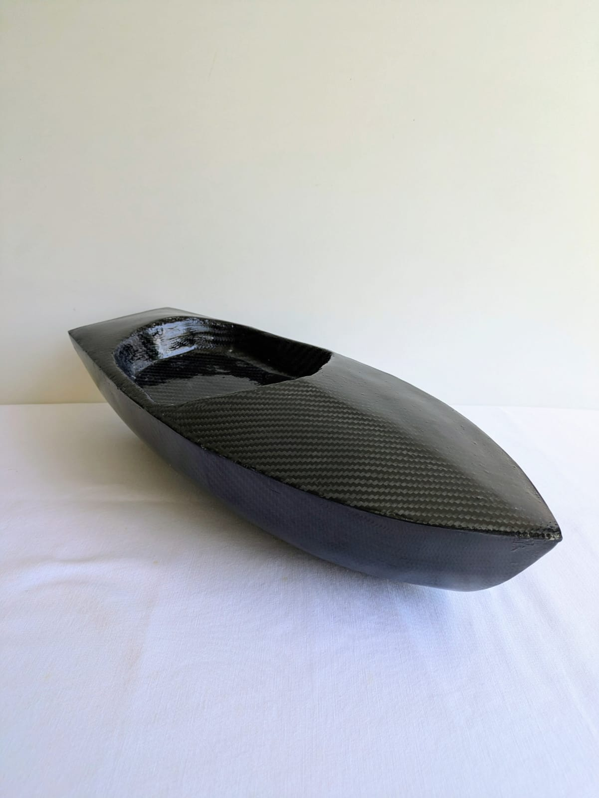
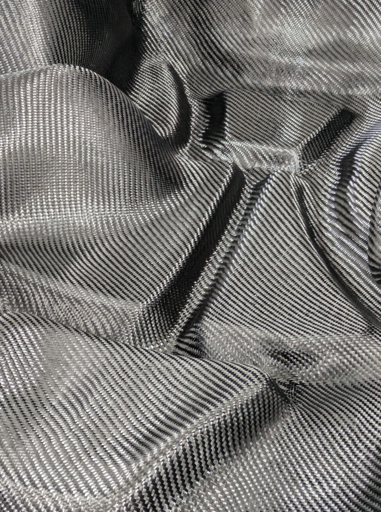
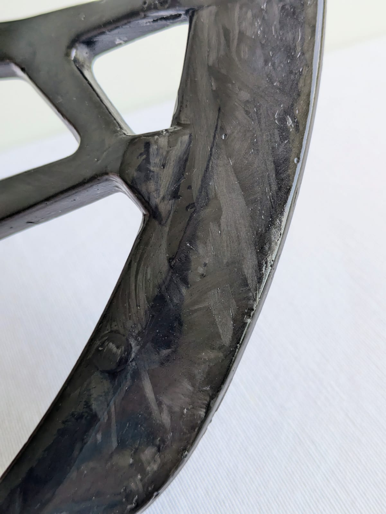
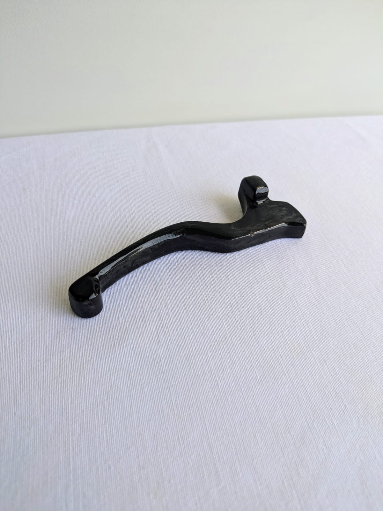
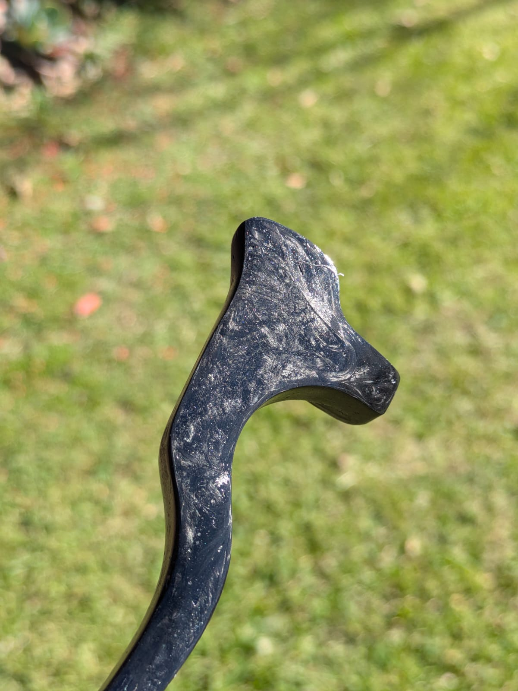
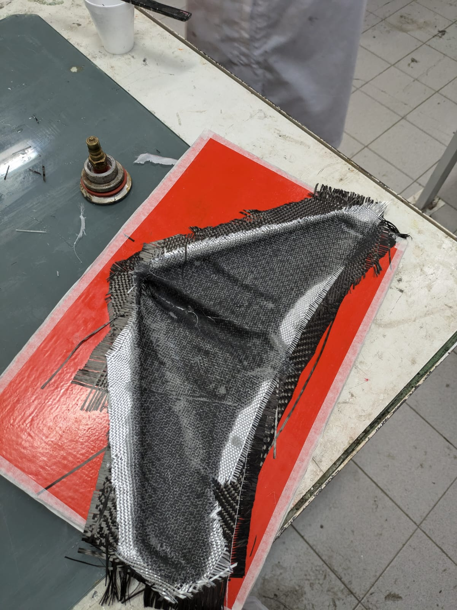
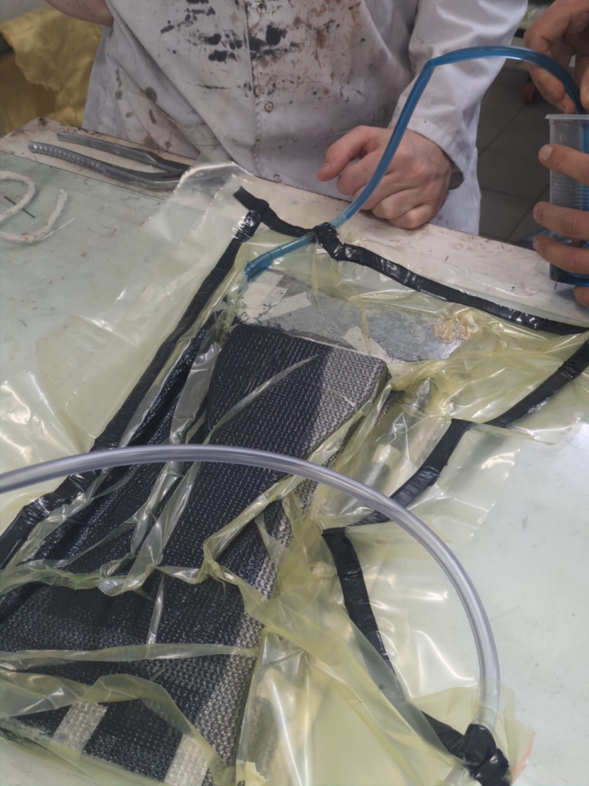

PRACTICE
Composite Materials
Hands-on knowledge in fiberglass and carbon fiber processes for prototyping, structural experimentation and product development
Practice centered on the development of parts and prototypes using composite materials, with experience in fiberglass and carbon fiber applications across manual lamination, mold-based fabrication and finishing workflows.
Familiar with processes such as mold preparation, material cutting, resin application, layering sequences, vacuum-assisted experimentation, curing and demolding, always balancing structural logic, surface quality and manufacturability.
This material practice has been useful not only to understand composites as a production method, but also as a design tool: learning how geometry, thickness, reinforcement direction and finishing decisions directly affect performance, weight and final expression.
Fiberglass & Carbon Fiber
LAMINATION · MOLDS · STRUCTURAL EXPLORATIONExperience working with composite materials through practical experimentation and hands-on production. This includes understanding the logic of mold preparation, reinforcement placement, resin distribution, layering and part release, as well as the finishing stages required to achieve a controlled result.
Fiberglass has been especially useful for exploring accessible composite workflows, testing surfaces, volumes and part-making strategies. Carbon fiber introduced a more demanding relationship with precision, material handling and structural intent, requiring greater attention to orientation, consistency and final performance.
Beyond fabrication itself, this practice strengthened a broader understanding of how composite processes influence design decisions from the very beginning: how a part should be split, where thickness matters, what kind of mold logic is viable, and how production constraints shape form.















